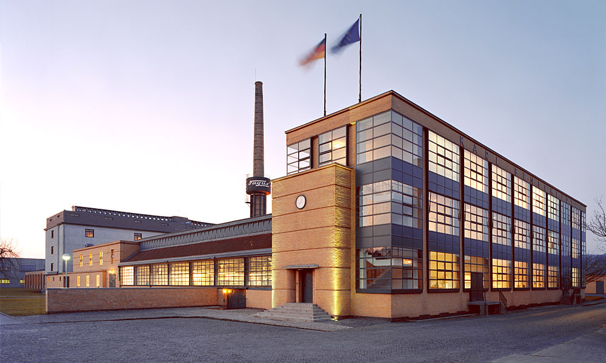
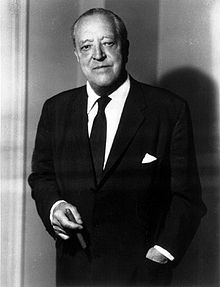
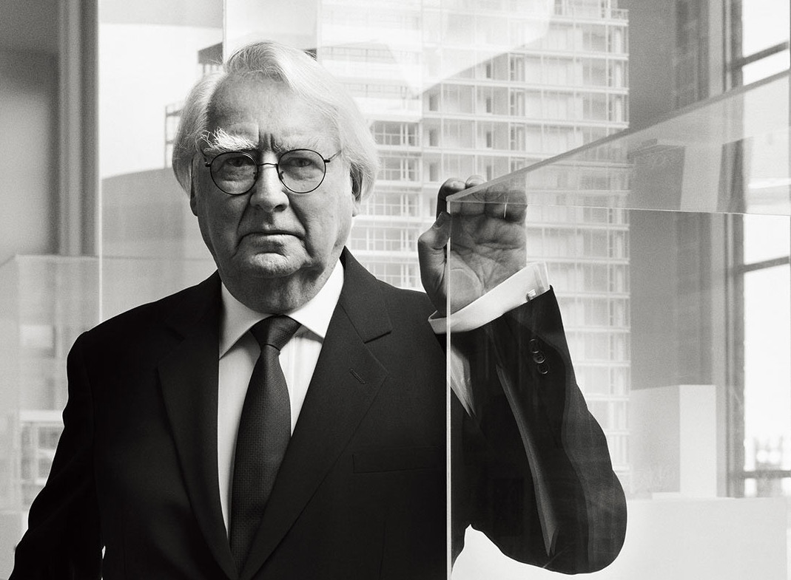

Walter Adolph Georg Gropius (18 May 1883 – 5 July 1969) was a German architect
and founder of the Bauhaus School. He is a founder of Bauhaus in Weimar (1919). Gropius was also a
leading architect of the International Style.

Fagus Factory, the first attempt

In 1911, he and Adolf Meyer designed the Fagus Factory, a glass and steel cubic
building which pioneered modern architectural devices such as glass curtain walls,
and was built from the floor plans of the more traditional industrial architect Eduard Werner.
Charles-Édouard Jeanneret (6 October 1887 – 27 August 1965), known as Le Corbusier
was a Swiss-French architect, designer, painter, urban planner, writer, and one of the
pioneers of what is now regarded as modern architecture. He was born in Switzerland
and became a French citizen in 1930. His career spanned five decades, and he designed
buildings in Europe, Japan, India, and North and South America.

Villa Savoye

Completed in 1931, Villa Savoye is one of the most important houses of the 20th century.
A key building in the development of the International Style of Modernism,
it is one of the only houses in France to have been declared a national monument
during the architect's lifetime.
Ludwig Mies van der Rohe; (born Maria Ludwig Michael Mies; March 27, 1886 – August 17, 1969) was a German-American
architect. He was commonly referred to as Mies, his surname. Along with Alvar Aalto, Le Corbusier,
Walter Gropius and Frank Lloyd Wright, he is regarded as one of the pioneers of modernist architecture.

Farnsworth House

The Farnsworth House, built between 1945 and 1951 for Dr. Edith Farnsworth as a weekend retreat,
is a platonic perfection of order gently placed in spontaneous nature in Plano, Illinois.
Just right outside of Chicago in a 10-acre secluded wooded site with the Fox River to the south,
the glass pavilion takes full advantage of relating to its natural surroundings, achieving Mies'
concept of a strong relationship between the house and nature.
Richard Meier (born October 12, 1934) is an American abstract artist and architect, whose geometric
designs make prominent use of the color white. A winner of the Pritzker Architecture Prize in 1984,
Meier has designed several iconic buildings including the Barcelona Museum of Contemporary Art,
the Getty Center in Los Angeles, and San Jose City Hall.

Smith House

Five decades ago, Carole Smith called Richard Meier and told him about a site in Darien,
Connecticut that she had bought with her husband. This was a rocky piece of land with
dense evergreens and coastal outcrops. A dramatic slope at the back of the plot gave way
to the Long Island Sound and a small, sandy cove. Carole wanted to place her weekend home
on this particular site and she wanted Richard Meier to do it. At that time, he was just 31.